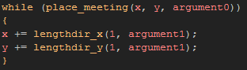
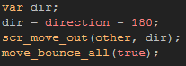
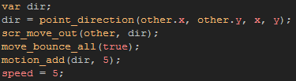
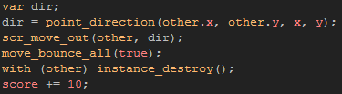

Tutorial
Page 11 of 13
Scripting A New Function
The game is now almost complete and we just need to add a couple of finishing touches. One of the most important things left to do is make the collisions with the ball and the other objects neater,
as at the moment the ball can sometimes become "trapped" in the bat when moving. For this we are going to use a script. Scripts are snippets of code that you can write to create your
own functions for GameMaker and they can take arguments and return values just like any built in function.
Right click on the script resource folder and select Create Script. Call your new script "scr_move_out" and then copy the following code:

What this script is going to do, is move the instance that runs the script along a given direction 1 pixel ata time until it no longer detects a collision with the given object. The object is passed to the script as
an argument, as is the direction that we are going to move tghe instance.
Now that we have the script written, open up the ball object and add the following codes into the correct events:
Collision with the wall

Collision with the bat

Collision with the bricks

This new function that we have scripted will now ensure that the ball cannot become trapped in any of the gameplay elements. Scripts are an exceptionally powerful tool and there are many, many of them available
on the internet which can be used to expand on the functionality of GameMaker.
Click on the Next button to go to the next page of the tutorial.